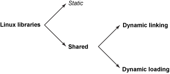
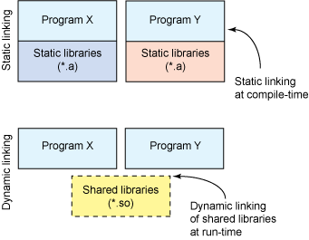

站长原创，版权所有ITEEDU，2011-05-28
在编译完毕qt之后，file file libqte.so.2.3.10后：
libqte.so.2.3.10: ELF 32-bit LSB shared object, ARM, version 1, dynamically linked, not stripped
网上还有其他一些file结果：
libqte.so.2.3.2: ELF 32-bit LSB shared object, ARM, version 1 (SYSV), stripped
问题：
所以我就很想知道到底什么是stripped、dynamically linked、sysv？
有stripped，那么肯定也有not stripped，而且它们俩是相对的。
Stripped和not stripped的最大区别：
stripped：将程序中的符号表的信息剔除掉了，这样子编译出来的可执行文件体积比较小；
not stripped：则反之，但是就是因为其保留了这些信息，所以便于调试。
提起Dynamically linked，则要归结到库的概念和应用了，所以我就系统地了解了一下子，并愿意贴出来，跟大家一起分享。
库的目的是将类似的功能封装在一个单元集中。这些单元可以被其他开发人员共享，并称其为模块化编程，也就是说从模块中编译程序。Linux支持两种类型的库，每种都有自己的优点和缺点。静态库在编译程序时，将库中相应的功能绑定到程序中；然而动态库则不同，它是当程序在运行时才被加载的。图1显示了linux库的层次结构。

图1 linux库的层次结构
你可以通过两种方式来使用共享库的：要么在程序运行时动态地链接，要么在用户的控制下进行动态地加载。这篇文章将讨论着两种方式。
静态库对于功能少的小程序中是有益的。然而对于需要多个库的程序来说，共享库则可以减少程序的内存占用（包括磁盘上的和运行时的内存）。这是因为多个程序可以同时使用一个共享库，因此在一个时间，内存中只需要保留一个共享库的副本即可。使用静态库，每一个正在运行的程序库都有个库的副本。
GNU / Linux提供两种方法来处理共享库（每个方法都是Sun Solaris起源）。你可以动态链接共享库，并在执行时，使用Linux系统加载库（除非它已经在内存中了）。另一种方案是有选择性地调用进程中的库函数，被称为动态加载。采用动态加载，程序可以加载一个特定的库（除非已经加载），然后调用该库中的某一特定功能。 （图2显示了这两种方法。）这是在建立支持插件的应用程序时所共同使用的模式。

图2 动态链接
Linux的动态链接
现在，让我们深入探讨了在Linux中使用动态链接的共享库的过程。当用户启动应用程序时，它们是调用一个可执行的和链接格式（ELF）的镜像。内核始于加载ELF映像到用户空间的虚拟内存的过程。内核注意到一个名为ELF段，被称为.interp，这表明动态链接器要被使用（/lib/ld-linux.so），如清单1所示。这类似于在UNIX中所解释定义的脚本文件（#!/bin/sh）：只是在不同的上下文中使用。
清单1 使用只readelf命令来展示程序的头文件
mtj@camus:~/dl$ readelf -l dl
Elf file type is EXEC (Executable file)
Entry point 0x8048618
There are 7 program headers, starting at offset 52
Program Headers:
Type Offset VirtAddr PhysAddr FileSiz MemSiz Flg Align
PHDR 0x000034 0x08048034 0x08048034 0x000e0 0x000e0 R E 0x4
INTERP 0x000114 0x08048114 0x08048114 0x00013 0x00013 R 0x1
[Requesting program interpreter: /lib/ld-linux.so.2]
LOAD 0x000000 0x08048000 0x08048000 0x00958 0x00958 R E 0x1000
LOAD 0x000958 0x08049958 0x08049958 0x00120 0x00128 RW 0x1000
DYNAMIC 0x00096c 0x0804996c 0x0804996c 0x000d0 0x000d0 RW 0x4
NOTE 0x000128 0x08048128 0x08048128 0x00020 0x00020 R 0x4
GNU_STACK 0x000000 0x00000000 0x00000000 0x00000 0x00000 RW 0x4
...
mtj@camus:~dl$
请注意，ld-linux.so本身就是一个ELF共享库，但它是静态编译的，并不依赖于共享库。当需要动态链接时，内核自动启动动态链接器（ELF解释器），它先初始化自身，然后加载指定的共享对象（除非已加载）。之后，它执行必要的再定位，包括目标共享对象所使用的共享对象。 LD_LIBRARY_PATH环境变量定义了可用的共享对象的路径。完成后，控制权转移回原来的程序，开始执行。
其实Linux会为给定的程序自动装载和链接库，它可以分享这个应用程序本身的控制。在这种情况下，这一过程被称为动态加载。有了动态加载，应用程序可以指定一个特定的库来加载，然后将其作为一个可执行库来使用（即调用其中的函数）。然而，正如你前边所学，共享库动态加载功能，只不过是一个标准的共享库（ELF共享对象）。事实上，ld-linux动态链接作为ELF加载器和解释器仍然参与了这项工作的过程。
动态加载（DL）的API可以动态加载共享库，并允许将其提供给用户空间的程序。API虽然小，但是它提供程序需要的所有东西，并在程序执行背后做了好多工作，完整的API见表1。
表1 完整的API
Function |
Description |
dlopen |
打开一个动态链接库 |
dlsym |
获取所打开文件对象的描述符地址 |
dlerror |
返回最后一次发生错误的信息字符串 |
dlclose |
Closes an object file关闭一个文件对象 |
sysV是UNIX的两大分支之一,现在的UNIX和类UNIX系统根据其发展分支可以分为sysV分支和BSD分支,这两个分支是最初的UNIX分化出来的最初的AT&T实验室的UNIX系统到了第5版,也是就system V (sysV) 后就分化成了BSD分支和sysV分支, 两者的最大区别就是启动过程的运行等级机制有很大区别. linux是sysV风格的UNIX系统,freeBSD是BSD风格的UNIX系统, 但是现在这个界限也在慢慢模糊掉, 两种分支的系统取长补短,相互渗透。